PR 1782 · Official UI proof
Production build, isolated PostgreSQL 17, ordinary authenticated RPC. Synthetic data; no production or provider acceptance claim.
Product 98403150bd6ac39683539bc278a9bf161e84dabf
UI overlay b92b0e1d48f75c92d059ee071162b72455e6af90
Waiting, blocked, failed, still-open task and completed task · light · 1440 × 900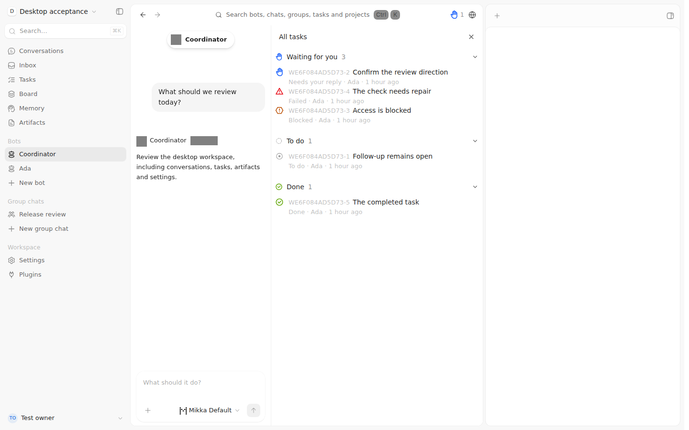
Coordinator has no tasks; the global hand still counts one · light · 1440 × 900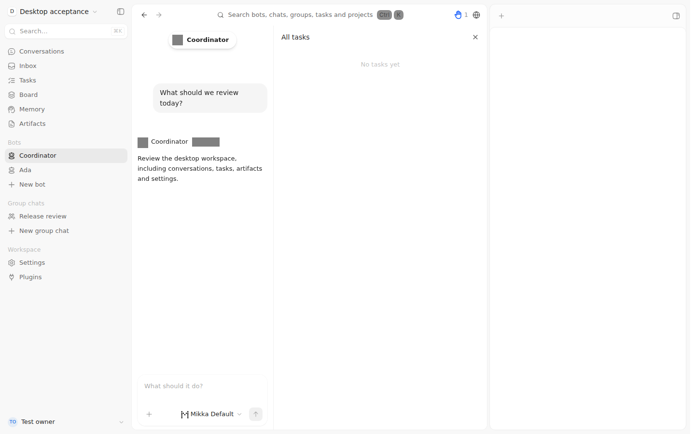
Human assignee and separate Agent Delegate · light · 1440 × 900 Delegation event and successful historical attempt; task remains open · light · 1440 × 900
Delegation event and successful historical attempt; task remains open · light · 1440 × 900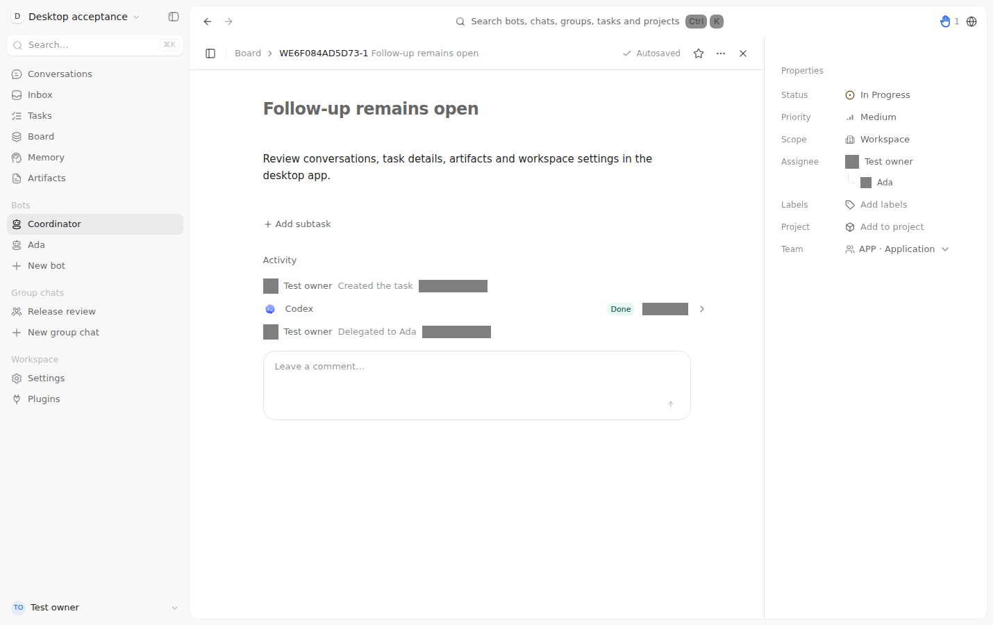
Real stale-revision error; unsaved draft remains editable · light · 1440 × 900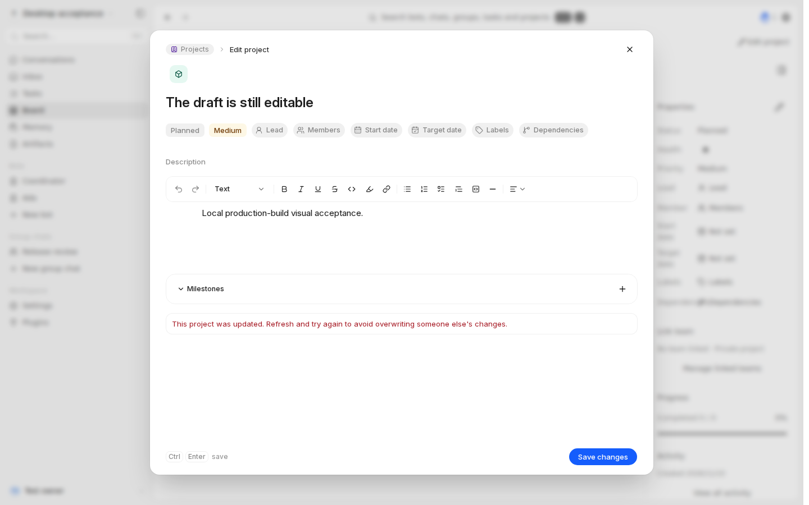
Waiting, blocked, failed, still-open task and completed task · dark · 1440 × 900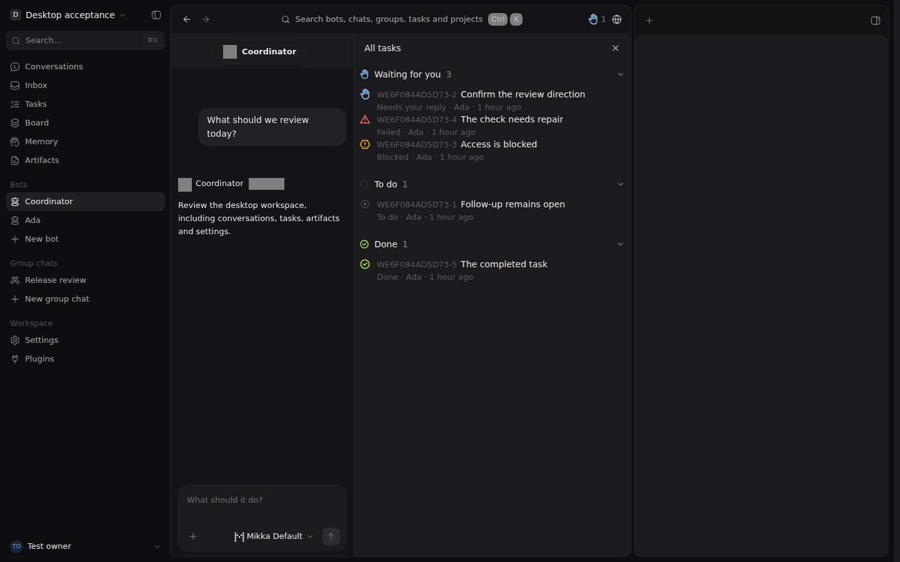
Coordinator has no tasks; the global hand still counts one · dark · 1440 × 900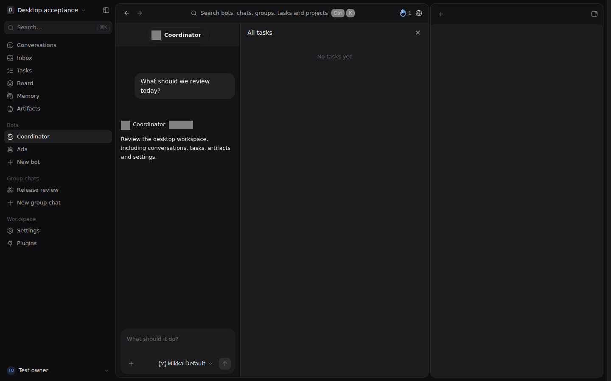
Human assignee and separate Agent Delegate · dark · 1440 × 900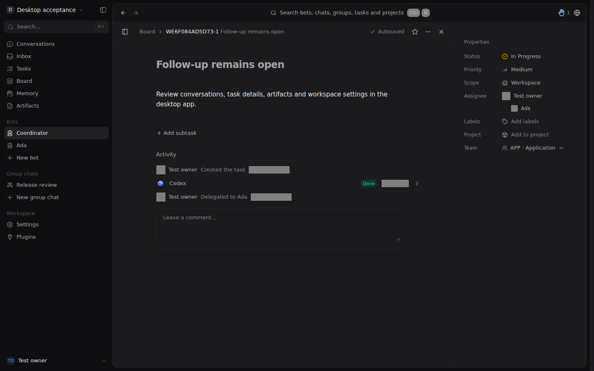
Delegation event and successful historical attempt; task remains open · dark · 1440 × 900 Real stale-revision error; unsaved draft remains editable · dark · 1440 × 900
Real stale-revision error; unsaved draft remains editable · dark · 1440 × 900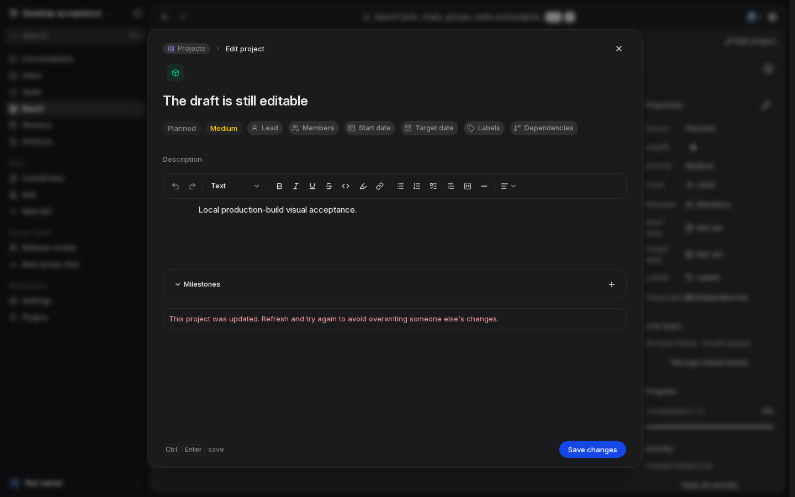
Waiting, blocked, failed, still-open task and completed task · light · 390 × 844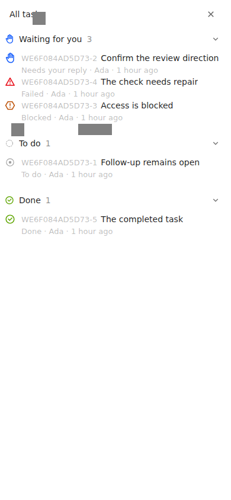
Coordinator has no tasks; the global hand still counts one · light · 390 × 844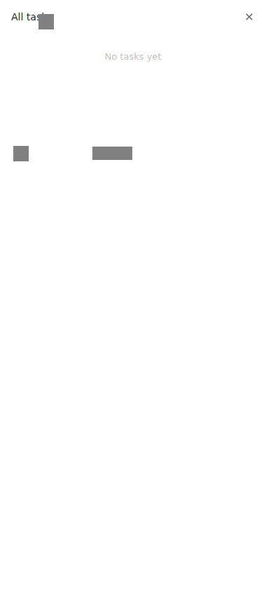
Human assignee and separate Agent Delegate · light · 390 × 844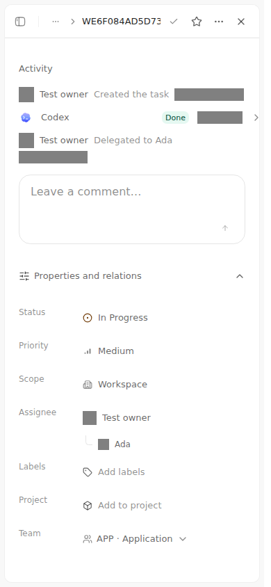
Delegation event and successful historical attempt; task remains open · light · 390 × 844 Real stale-revision error; unsaved draft remains editable · light · 390 × 844
Real stale-revision error; unsaved draft remains editable · light · 390 × 844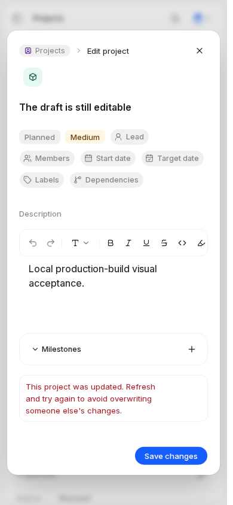
Waiting, blocked, failed, still-open task and completed task · dark · 390 × 844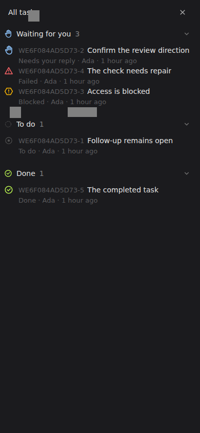
Coordinator has no tasks; the global hand still counts one · dark · 390 × 844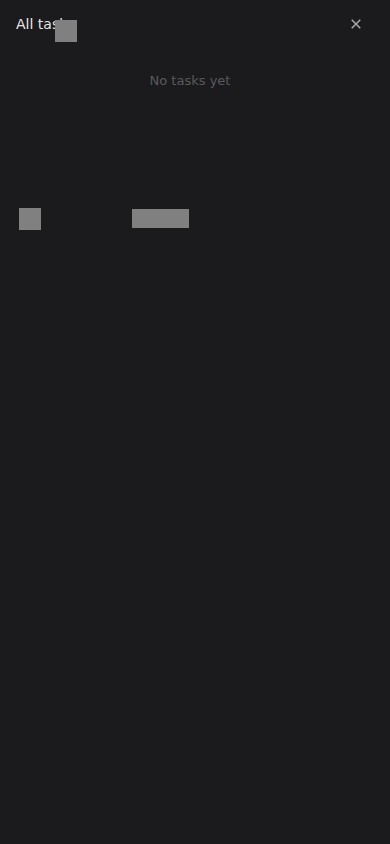
Human assignee and separate Agent Delegate · dark · 390 × 844 Delegation event and successful historical attempt; task remains open · dark · 390 × 844
Delegation event and successful historical attempt; task remains open · dark · 390 × 844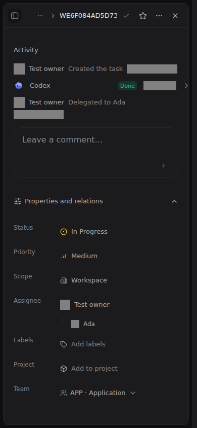
Real stale-revision error; unsaved draft remains editable · dark · 390 × 844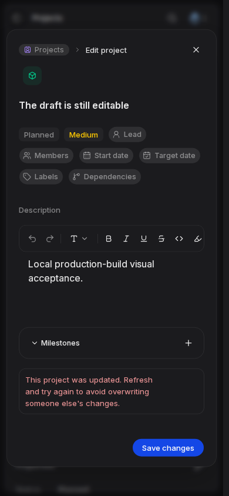